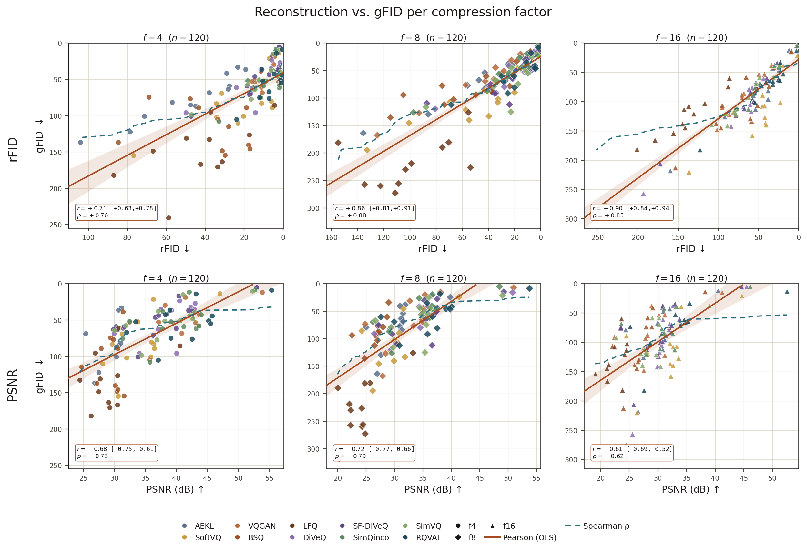
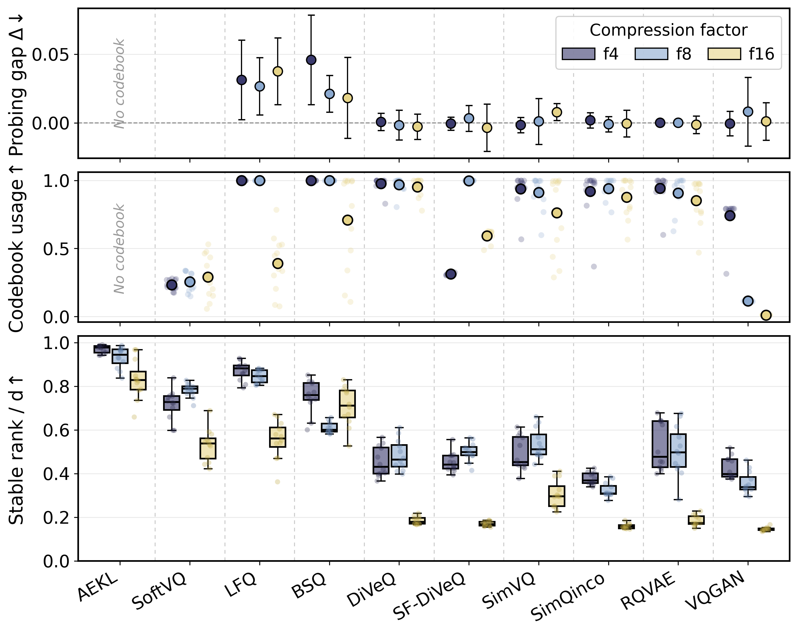
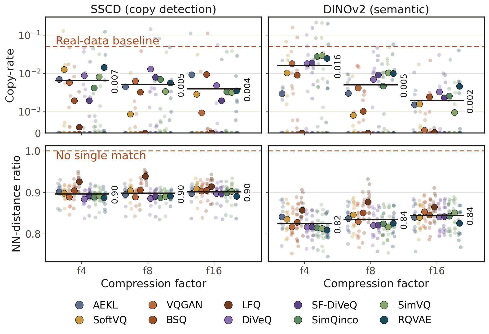

1School of Computation, Information and Technology, TU Munich 2Munich Center for Machine Learning 3School of Medicine, Klinikum rechts der Isar, TU Munich 4ELLIS Institute Finland 5Aalto University 6Imperial College London
TL;DR In medical imaging, a tokenizer's reconstruction quality strongly predicts its generation quality (r = 0.82), unlike prior reports on natural images. Modern codebooks are fully used but leave most of the latent space unused, memorization is mild and shrinks under stronger compression, and discretization largely preserves downstream information.
Latent diffusion models now dominate medical image generation, and every such pipeline rests on a tokenizer that compresses images into the latent codes for image generation to operate on. Thereby, the tokenizer choice bounds every downstream task from reconstruction fidelity and generation quality to the representations available for downstream analysis. Yet, medical imaging pipelines routinely utilize tokenizers from natural imaging on the hypothesis that their behavior carries over. However, this is an assumption never tested in the medical imaging regime, where datasets are orders of magnitude smaller and images exhibit far lower inter-sample variance.
We present a systematic evaluation of medical image tokenizers evaluating thirty configurations across ten model families on twelve datasets at three compression factors, spanning reconstruction, generation, latent geometry, downstream classification, and memorization. We find that (1) performance on image reconstruction and generation strongly correlate, unlike prior reports on natural images; (2) modern tokenizers use nearly all of their codebook entries, but still leave most of the latent space unused; (3) training-set memorization is mild and is further suppressed by stronger latent space compression; and (4) discrete quantization can largely preserve downstream classification, with lookup-free schemes being the main exception.
rFID and gFID correlate at r = 0.82 (95% CI [0.77, 0.86], n = 360; Spearman ρ = 0.81), and the relationship holds within every dataset and every compression factor. Reconstruction, which is free to measure, is a usable proxy for generation, which requires training a generator.
Reparameterized, residual and lookup-free schemes keep ≈100% codebook usage, yet explicit-codebook methods compress their latents onto a thin subspace (stable rank 0.15–0.54 of d), while lookup-free and continuous latents stay near-isotropic.
Across 720 configurations, copy-rates stay far below the real-data baseline of 0.05 and fall as the bottleneck tightens (SSCD: 0.0065, 0.0052, 0.0039 at f = 4, 8, 16). Elevated cases track low-diversity datasets rather than tokenizer design.
Linear probes on the discrete zq match the continuous ze to within noise for explicit-codebook, residual and differentiable schemes. Lookup-free binarization (LFQ, BSQ) is the exception, with a consistent gap of 0.02–0.05.
Every quantizer plugs into the same purely convolutional VQ-GAN encoder-decoder at fixed spatial compression f ∈ {4, 8, 16} and latent channels d ∈ {3, 4, 8}, so per-f differences are attributable to the quantizer alone. All tokenizers share one objective (MSE, LPIPS, and a hinge PatchGAN loss with adaptive weighting), stabilized for small medical datasets with DiffAugment, consistency regularization and a LeCAM penalty.
For generation, each autoencoder is frozen and a single DiT-B/2 is trained on its continuous pre-quantization latent ze, conditioned on the class label and a learned dataset embedding, so one network serves all twelve datasets. Generating in ze avoids tying generation quality to codebook cardinality.
FMD (Fréchet Medical Distance) replaces the ImageNet Inception-V3 backbone of FID with each dataset's official MedMNIST ResNet-18 classifier, measuring distances in a feature space tuned to that dataset.



Within our evaluated setting:
Reconstruction still has headroom. It has not saturated and tends to predict generation, so it is a reasonable lever to keep improving, with limited privacy risk given that memorization remains mild.
Discrete tokenizers are competitive substrates for continuous-latent diffusion. They tend to match or outperform the continuous baseline on reconstruction and generation while preserving downstream utility.
Residual quantization is a strong default. RQVAE performs well across compression factors, though part of its edge is structural: it spends several codebook levels per token, hence more bits than single-codebook methods.
The study covers 2D data with a single DiT-B/2 generator; volumetric data, generator scaling and autoregressive modeling of the discrete codes remain open.
@inproceedings{bubeck2027tokenizer,
title = {What Makes a Good Medical Image Tokenizer? Rethinking Reconstruction
and Generation in Medical Image Tokenization},
author = {Bubeck, Niklas and Zhang, Yundi and Sideri-Lampretsa, Vasiliki and
McGinnis, Julian and Yang, Jiancheng and Rueckert, Daniel and Pan, Jiazhen},
booktitle = {Proceedings of the IEEE/CVF Winter Conference on Applications of
Computer Vision (WACV)},
year = {2027}
}